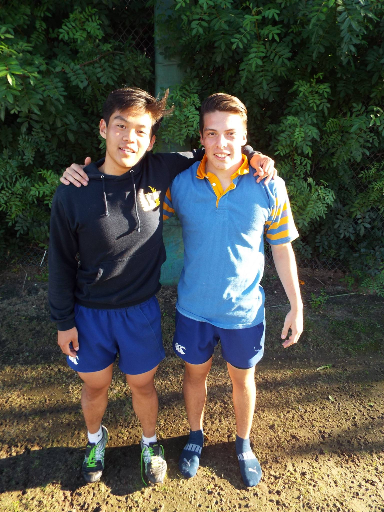
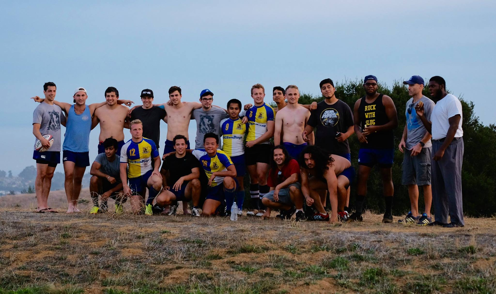

Fall annoucements Monday, September 14, 2015
First Practice:
When: September 27, 2015 @ 12:00pm-2;00pm
Where: Warren Field
Regular Practice Schedule
When: Monday and Wednesday @ 6:00pm-8:00pm
Where: Warren Field
Brain Kennedy ( Head Coach): Kennedy@ucsdrugby.com
Judah Word ( Recruiting Captain ): Judahw0@gmail.com
Follow us on all our social media platforms for the latest news and up-
dates (Facebook, Twitter, and Instagram) and check us out at ucsdrugby.com
Welcome! Tuesday, September 8, 2015
 Welcome to University of California, San Diego Men's Rugby website. This website is dedicated to provide news, updates, and photos about the team to our fans. Thank you and feel free to visit every corners of our site.
Welcome to University of California, San Diego Men's Rugby website. This website is dedicated to provide news, updates, and photos about the team to our fans. Thank you and feel free to visit every corners of our site.
We are constantly recruiting motivated students of all levels to battle along side us as we compete against some of the top teams around. Follow us on all our social media platforms for live game updates.
Cheers!
League opener Friday night Wednesday, December 10, 2014
The Tritons begin 2015 GCCIR play Friday, January 30th, at local rival Universitry of San Diego. Kickoff is 8:00 p.m. at USD. The teams met in the City Championship in November, with USD edging UCSD 5-3.
The home opener is the following weekend. The Tritons host USC on Saturday, February 7th, at 1:00 p.m.
Men's Rugby at SD City ChampionshipSaturday, November 7, 2015
 UCSD rugby took on some tough opposition at the San Diego City Championship at the little Q arena, home of the OMBAC rugby team. The Tritons played San Diego State’s A and B teams, Point Loma Nazarene University and University of San Diego in an action packed Saturday. UCSD finished the day with three defeats and one win, but performed well against upper division level teams.
UCSD rugby took on some tough opposition at the San Diego City Championship at the little Q arena, home of the OMBAC rugby team. The Tritons played San Diego State’s A and B teams, Point Loma Nazarene University and University of San Diego in an action packed Saturday. UCSD finished the day with three defeats and one win, but performed well against upper division level teams.
UCSD opened the day with their B team against SDSU’s B team. With a lot of new faces on their team, UCSD fared well against a tough opponent. UCSD’s B team had a couple of nice breaks, but was missing the experience necessary to conclude their actions. The Tritons had a strong showing in the first game of the tournament but ultimately fell to SDSU B.
In the second game, UCSD A had its best game of the fall season, thrashing SDSU’s A team by five tries to one. UCSD started off with a couple of sloppy plays, but retained the ball effectively and got a first try of a quick ball to the left of the field by Saun Martinez, after a nice quick ball play by Jonathan Reyes and George McMahon. UCSD pounced the ball into the end-zone one more time after a quick tap of a penalty led to a breakaway try from Pierre Karpov. Coming into halftime with a two tries lead, UCSD had to make some changes due to several injuries. The Tritons kept the same intensity in the second half however, scoring three more tries. The two first one were scored by standout Noah Lee, who zigzagged the defense for the first one and cut back inside to score another one from 20 meters out. The third one was scored on a class action by the Tritons who went weak-side to sneak one in. SDSU scored one back before the end of the game, but UCSD dominated and left the pitch victorious.
After a two hour layoff, UCSD was back on the field against PLNU. The Tritons suffered from the injuries that occurred earlier and PLNU’s energy proved too much for the UCSD. A lot of newcomers had a good run with the designated B side of the Tritons, who defended valiantly but lacked the discipline to defeat the Sea Lions. In the last game of the day, a banged up UCSD A side was no match for USD’s speed. The Tritons got lazy on defense and USD took the gaps, to score several times and get away with the win.

The two rookies of the day for UCSD were Christian Espinoza and David Zhai. After sitting out with an injury after the first game of the season, Christian was a bright spot with his defense on the wings. He was credited with a few big tackles and a couple of nice runs, providing a spark on both sides of the ball. David was a force in the forward pack, providing good ball skills on offense and solid fringe defense on the defensive side.
UCSD gets a week off to rest and heal injuries before going out to play the Armada in the last game of the preseason in two weeks. With preseason over, the Tritons will then look ahead to the UC tournament and the beginning of their regular season in January.
Men's Rugby at PLNUSaturday, October 31, 2015
After hosting the University of Sydney on Wednesday and attracting a crowd to Warren Field for their only home game of the preseason, UCSD Rugby was back on the road at Ocean Beach to play Point Loma University. The Tritons showed up with a thin squad but battled hard, ultimately going down by the slimmest of margins to PLMU after four quarters of 20 minutes.
The day started off badly for the Tritons who lost three players after barely 10 minutes of play. UCSD would not let this drag them down however and continued to battle hard during the first quarter, which ended on a score of one try to two in favor of PLNU. The second quarter was as shaky as the first, but was highlighted by some nice runs from rookies George McMahon and Eric Golant as well as a beautiful 50 meter solo try by Pierre Karpov. UCSD leveled the score at the end of the second quarter and picked up the intensity for the following 40 minutes.
Everything got together for the final 40 minutes as UCSD started exploiting what PLNU was giving them with more efficiency and played together as a team. The defense made stops, despite allowing PLNU to score on some inattention errors. On offense, the progress made since the beginning of the preseason was visible and led to scores from Damon and Noah Lee to close out the game, on a beautiful run that saw the rookie get past half the PLNU defense to score the try. At the end of the day, UCSD showed up with intensity and determination to battle their rivals from San Diego but ultimately fell by one try to PLNU.
The two players of the game were Lewis Langi for the forwards and Max Pregoni for the backs. Lewis was one of the most active forwards for the Tritons, tackling and rucking on seemingly every play. He got out of the scrums quickly and put pressure on the opposing scrum-half and fly-half. Max got into the game in the second half and got his first meaningful minutes on the wing. He was credited with a few nice tackles and provided speed on the edge for an increasingly tired Triton team.
UCSD is back on the field next weekend at the San Diego City Championship where they will face City Rivals PLNU, San Diego State University and University of San Diego at the little Q field.
Men's Rugby at UCSC Tourney Saturday, October 24, 2015
The UCSD Men’s Rugby team drove up north to take on some top tier Division I NorCal opposition at the annual UCSC Rugby Tournament. The only SoCal representatives, the Tritons played well in their three games on Sunday and got meaningful playing time in for those who made the long road trip.
UCSD opened up the day with a game against the UCSC Slugs, the tournament’s hosts. With a few players out of position and a good mix of new guys mixed in with veterans, the Tritons held their own against a DI powerhouse. Despite suffering in set pieces and being deprived of good attacking opportunities, UCSD fared well and mounted a terrific goal line defense early in the first half. Some of the issues were corrected in the second half, and even though they did not score a try, the Tritons matched the Slugs’ intensity in the last 20 minutes and held UCSC to three tries on the day.
After a long layoff in between the first and second games, UCSD was back in action against Santa Clara. After working on their rucking in between the two games, UCSD came out aggressively and improved their ball retaining skills. With cleaner balls, the Tritons launched some good offensives against another good team and put pressure on the opposing defense. UCSD was held in check by Santa Clara, but their improvements held some promise for their last game.
Against arguably their toughest opponents of the day, Humboldt State, a diminished Tritons team showed heart and spirit, making the Lumberjacks work for every points they could get. The tired Tritons were no match for Humboldt’s speed, but UCSD put up great efforts to prevent the Lumberjacks from scoring tries, stuffing them before the goal line a couple of times. The thin Triton squad received help from a few UCSC players, in a display of tremendous sportsmanship and a true showing of rugby spirit.
The Tritons of the day were Wilf Dunne for the forwards, rewarded for his leadership on the defensive side and his continuous rucking and tackling. On the back line, Sean Martinez was recognized. The rookie held his own against some tough competition and played the whole three games for the Tritons, getting meaningful playing time and experience on the wing.
UCSD is back at it this week, hosting the University of Sidney for a joint practice on Monday and a game on Wednesday night at Warren Field at 7, before going to downtown San Diego to play Point Loma University on Saturday.
Men's Rugby at USD Saturday, October 10, 2015
This Saturday was our first game of the season, and for many, their first game of rugby.
It was under the scorching Californian sun that we fought against the USD’s Toreros.
USD is historically known to be better than UCSD at rugby, but despite having mainly
rookies on our team, we made the Toreros work hard for their win.
Even if about a third of our players never played rugby before, they applied the little that
they were taught within two weeks of training. Very few penalties were called and
everyone played hard.
The rewarded back and forward of the game were Noah Lee and George McMahon.
Noah ran several great strike lines and broke through USD’s defense to score our first
try. And George played with an impressive intensity putting the Toreros on their heels
after every run. Another notable player from this match was Pierre Karpov completing
an impressive try from deep in our own 22. Pierre with great awareness initial kicked the
ball over the entire USD defense and successfully chased the ball giving one finally kick
to reach the Toreros try line where Pierre dove onto the ball for the score.
Our performance was, of course, very far from perfect and this is why our practices are
now focused on correcting the recurrent errors that were noticed during the game. We
are currently working hard on adjusting our defense and setting up a counter attack, and
we hope to apply that next weekend against Point Loma Nazarene University.
Men's Rugby at Santa Barabara Saturday, March 14, 2015
Saturday was another rugby day for the Tritons and one of their last as they wind down their season. The day began early when the team met up to load the vans in preparation for a long drive to Santa Barbara Community College. A quick burrito stop along the way got the Tritons fueled and ready for battle.
Upon arrival in early afternoon Sandman, first time van driver, finally found his way into a parking space and the Tritons took to the blistering hot field. Despite the loss that day the team was able to walk away with a vision for the future. Strengths and weaknesses were taken note of and the Tritons plan for improvement moving forward. The next game, and the last of the season, should be an exciting one to say the least so be sure to stop by Warren Field for another Triton rugby day.
Men’s Rugby at Long Beach Sunday, March 8, 2015
 Following a defeat to CSU Fullerton, UC San Diego Men’s Rugby team looked upon to redeem itself against the Long Beach State. Despite the early efforts by the UC San Diego to score a try, Long Beach State overpowered the Tritons by power running to the goal line. The extra points only strengthened their lead.
Following a defeat to CSU Fullerton, UC San Diego Men’s Rugby team looked upon to redeem itself against the Long Beach State. Despite the early efforts by the UC San Diego to score a try, Long Beach State overpowered the Tritons by power running to the goal line. The extra points only strengthened their lead.
Long Beach State’s lead was established early. A couple of missed tackles by UC San Diego players only favored Long Beach State. Despite beautiful passes by Captains Steven McCloskey and Isaias Bustos, and defense by Judah Word, UC San Diego fell to Long Beach State at their home field.
Only notable injury of the game was sustained by Brandon Ong, a fly half for UC San Diego, who injured his shoulder stopping a run by an opposing player. Despite the tough lost to a rival, UC San Diego Men’s Rugby team looks to end its losing streak and get redemption against Santa Barbara CC on March 14th.
UCLA Tournament January 17th-18th Saturday, January 17, 2015
 The UC San Diego Men’s Rugby Team took a road trip to UCLA this weekend for the 10th Annual Dennis Storer Classic - “All Cal” Tournament. The Tritons played three matches on Saturday and one on Sunday. All matches were two 20 minute halves. Our first match was the second of the morning against host UCLA. A hard fought first half between both teams’ A-sides led to three Bruin tries to our one. The Triton back-line showed some flare early as center Andrew Dries scored the first try of the match off of a pass from Co-Captain Isaias Bustos. 12 substitutions were made at half time to get many newer players experience against a strong Bruin team. Late in the second half, wing Manny Martinez picks up his first try of the tournament. Final score: UCLA 31, UCSD 10.
The UC San Diego Men’s Rugby Team took a road trip to UCLA this weekend for the 10th Annual Dennis Storer Classic - “All Cal” Tournament. The Tritons played three matches on Saturday and one on Sunday. All matches were two 20 minute halves. Our first match was the second of the morning against host UCLA. A hard fought first half between both teams’ A-sides led to three Bruin tries to our one. The Triton back-line showed some flare early as center Andrew Dries scored the first try of the match off of a pass from Co-Captain Isaias Bustos. 12 substitutions were made at half time to get many newer players experience against a strong Bruin team. Late in the second half, wing Manny Martinez picks up his first try of the tournament. Final score: UCLA 31, UCSD 10.
After a short break, the Tritons took on UC Riverside. The Tritons showed strength in their drives down the field, but came up short on two critical goal line situations. Jacob Buck showed his sideline speed scoring the only try of the match, but it was not enough to stop three big breaks from Riverside. Final score: Riverside 19, UCSD 7.
In our last match on Saturday, the Tritons took on UCSC. Due to inexperience and fatigue on the Triton side, the Banana Slugs found holes in the Triton’s defensive line which led to four breakaway scores. Final score: UCSC 28, UCSD 0.
After a good night’s rest, the Tritons came out ready for their Sunday match versus UC Davis. Although UC San Diego was outsized by the Aggies, they put up a strong fight. Defensively, the Tritons did not let up big plays, and offensively, the Tritons drove down the field with consistency. In the second half, Manny Martinez scored on a chip kick from flyhalf Brandon Ong. On the previous play, hooker Khalil Kanbar had a strong forward ball which set up a mismatch on the wide side of the field. The score was Martinez’s second of the tournament and 6th of the preseason. In the end, the Aggies proved they were a dominant team as the match ended 36-5.
On a team with roughly half of its players being rookies, the Tritons are eager to continue learning and working on their mistakes in the next two weeks. Their next game is the first of the regular season at USD on January 30th at 8:00pm.
Team history
UCSD Rugby has a long and colorful history. Founded in 1966, the club is one of the oldest sports on campus. The general attitude of the 1960's and early '70's fostered a perfect source of recruits for the counter culture of rugby. These early years of the "rebel sport" gave way to serious, competitive play in the mid 1970's. In 1975, UCSD captured the Collegiate Championship of the Santa Barbara Tournament, the largest rugby fixture in the West. During this period, UCSD rugby alumnus Peter Sertic took over the head-coaching job and solidified the team with active recruiting, and routinely fielded two sides.
The 1984-85 season brought a coaching change; Tom Butler built upon the foundation laid by Coach Sertic. In 1987 UCSD captured the first of three successive Southern California College division rugby championships. Butler also began the tradition of touring every year.
The 1989-90 season was the first time the Tritons played in the University Division (DI), making rugby and water polo the only UCSD sports to compete in league play at the Division I level. That season, the Tritons had a respectable league record, and swept the University of San Diego and San Diego State to win the "Kings of the City" title. In 1992, the Tritons toured overseas for the first time, playing in the Bahamas. Two UCSD players received the honor of playing for the Bahamian national team. The team returned to the Caribbean the following year, touring Jamaica in 1993.
Coach Butler retired following the 1992-93 season. Former assistant coach Mark Stenson took over, and along with Eric Takeuchi sought to continue UCSD's winning ways. Along the way Paul Reynolds and Tim O’Hara joined to help coach the forwards and backs, respectively. The Tritons were the Division II runners-up in 1996, and in 1997 won the Division II Southern California championship.
The 1998 team captured the first ever Division II National Championship held by USA Rugby, beating the University of Oregon in the finals in Albany, NY. In the three games in three days format, the Tritons’ superior fitness and skills showed as they outscored their opponents 86-13.
In 1999, former captain Troy Meyer joined the coaching staff. The Tritons again dominated league play, and earned a shot to defend their title at the National Championship in Cincinnati. UCSD won it all for a second straight season, coming from behind to beat Chico State in the finals, 21-18. The 1999 squad also took the team’s first-ever European tour, traveling to Wales (the site of the Rugby World Cup later that year) during Spring Break.
The Tritons opened the new millennium by moving up to compete in Division I. They finished a very respectful 5-3 in their first year, narrowly missing a playoff birth. In 2003, Stenson and Takeuchi stepped aside, and O’Hara and Reynolds took over the coaching duties. Former player Dave Thomas joined the coaching staff in 2005 after returning to San Diego, and the Tritons continued to compete in the top level of collegiate rugby.
O’Hara and Reynolds stepped down from coaching after the 2007 season. Triton alum Brian Kennedy took over heading into the 2008 campaign. Takeuchi came out of retirement to coach the backs, and Thomas stayed on to run the forwards. After the 2008 season, SCRFU realigned the Collegiate Division. Division One was reduced from ten teams to five, based on 2008 standings. UCSD was among the five teams relegated, and returned to Division Two competition in 2009. After that season, SCRFU again realligned, and UCSD was placed in Division Three. The Tritons finished in second place, their only loss by a three-point margin to league champion CSU Fullerton.
Based on their strong 2010 performance, the Tritons moved back to Division Two for the 2011 season. As USA Rugby continued to realign the divisions, UCSD moved into the new 1AA Division for the 2013 season. Heading into 2014, UCSD is the newly formed Gold Coast Conference of Intercollegiate Rugby, a Socal D1AA conference. The conference is new, but UCSD faces old foes, including Claremont, Long Beach, Fullerton, and local rival USD.
Team honors
| League Titles | |
|---|---|
| USA RUGBY DIVISION TWO NATIONAL CHAMPIONS | 1998, 1999 |
| Souther California RFU Collegiate Division Champions | 1987,1988,1989, 1997,1998,1999 |
| Tournament Titles | |
| Santa Barbara (Gold) | 1975 |
| Houston Invitational (Bowl) | 1988 |
| Heartland of America (Cup) | 1989 |
| Escondido 10's | 1995 |
| Escondido 7's (Consolation) | 2011 |
| Tours | |
| Bahamas | 1992 |
| Jamaica | 1993 |
| Wales | 1999 |
| Tours Hosted | |
| Lanchester R.F.C. | 1987 |
| Christ Church U-23 | 1988 |
| US Naval Academy | 1989 |
| Australian Colts | 1989 |
| Univ. of Canterbury | 1989 |
| Univ. of Kansas | 1990 |
| Waikato U-19 | 1991 |
| Siena R.F.C. | 1991 |
| Catholic University | 992,1996 |
| Buckinghampshire Univ | 1998 |
| Sandhurst Academy | 2007 |
| British Army Air Corps | 2012 |
| University of Queensland | 2013 |
Individual honors
| All-Americans | |
|---|---|
| Eric Takeuchi | 1992, 1993 |
| Luke Armstrong | 2000 |
| Brian Kennedy | 2001 |
| SCRFU Collegiate Griffins | |
| John Tellenbach | 1998,1999 |
| Adam Lekoff | 1990 |
| Eric Takeuchi | 1990,1991,1992 |
| Mark Bazzett | 1996,1997 |
| Dan Brislin | 1996 |
| Andy Wilga | 1997,1998,1999,2000 |
| Chay Chang | 1998 |
| Daren Garb | 1998 |
| Brian Kennedy | 1999,2000,2001 |
| Luke Armstrong | 2000 |
| Nik Cherwink | 2007 |
| Chad Allen | 2008 |
| PCRFU Collegiate Grizzlies | |
| John Tellenbach | 1989 |
| Eric Takeuchi | 1991,1992 |
| U-19 Griffins | |
| Luke Palmer | 1988 |
| Dan Schmid | 1988 |
| Mike Seike | 1988 |
| U-19 Grizzlies | |
| Luke Palmer | 1988 |
| Dan Schmid | 1988 |
| Caps | |
| Tim Hay-Edie (Bahamas) | 1992 |
| Mark Stenson (Bahamas) | 1992 |
| Paul Shattles (Norway) | 1995,1996 |
| Lifetime Triton Award | |
| Devon Shea | 1996 |
| Peter Sertic | 1998 |
| San Diego XV | |
| Mark Stenson | 1991 |
| Matt Cohen | 1991 |
| San Diego Collegiate XV | |
| Paul Shattles | 1989 |
| Eric Takeuchi | 1989 |